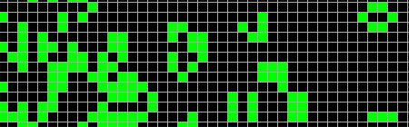

Üdvözöllek!
Fera vagyok, és ez a gyűjtőhelye a programozással kapcsolatos hobbi projektjeimnek. Ahogy a cím sugallja, nagyrész szimulációkat, és játékokat fogsz itt találni. Olyan dolgokat, amik egy kis túlzással nevezhetők apró "kozmoszoknak". Nézz körül bátran :)
Az Élet Játéka [2017, október 29.]

A saját verzióm a matematikus, Johny Conway, legendás Életjátékáról. A szabályok rendkívül egyszerűek. Ennek ellenére a játék érdekessége, hogy mennyire összetett magasabb rendű folyamatok jöhetnek létre egyszerű szabályok összjátékából. Nevezzük a négyzeteket "sejteknek". Minden egyes sejt lehet élő, vagy halott, és az állapotát a vele szomszédos sejtek állapota határozza meg. Egy élő sejt elpusztul amennyiben kevesebb, mint három élő szomszédja van (a magány miatt), vagy ha négynél több élő szomszédja van (túlnépesedés). Máskülönben a sejt életben marad. Ha egy halott sejtet pontosan három élő sejt fog közre, a sejt élővé válik (reprodukció). Ezen szabályokat a program egy időben hajtja végre minden egyes sejten.
Ahogy telik az idő sejtcsoportosulások alakulnak ki. Ezek a többsejtű organizmusok olyan tulajdonságokkal rendelkezhetnek, amelyek nem részei a játék alapszabályainak. A mozgás, növekedés, reprodukció képességével, talán még intelligenciával is? Minden esetre érdekes elnézni.
| Irányítás |
|
| Start/Stop |
Space |
| Összekeverés |
Ctrl |
| Sejtek rajzolása |
Jobb klikk |
Futtatás
GitHub
Alien Aggressors [2017, október]

Ez volt az első projektem, ami bonyolultabb néhány sor kódnál. Egy kis tribűt a klasszikus Space Invaders-nek. Az egyik fő inspiráció Dan Shiffman coding challange videója volt. Megcsináltam az ott látható gyakorlatot, majd időnkét visszatérve mindig egy kicsit hozzátoldottam a játékhoz. Nem tökéletes, de úgy néz ki hogy a végeredmény egész játszható. Van benne helyi többjátékos mód, úgyhogy, ha egy kis kooperatív mókára vágytok, tegyetek egy próbát. Külön köszönet Balagenak a menő grafikáért.
| Irányítás |
1. Játékos |
2. Játékos |
| Balra |
Balra nyíl |
X |
| Jobbra |
Jobbra nyíl |
C |
| Lövés |
Space |
Y |
Játék
GitHub